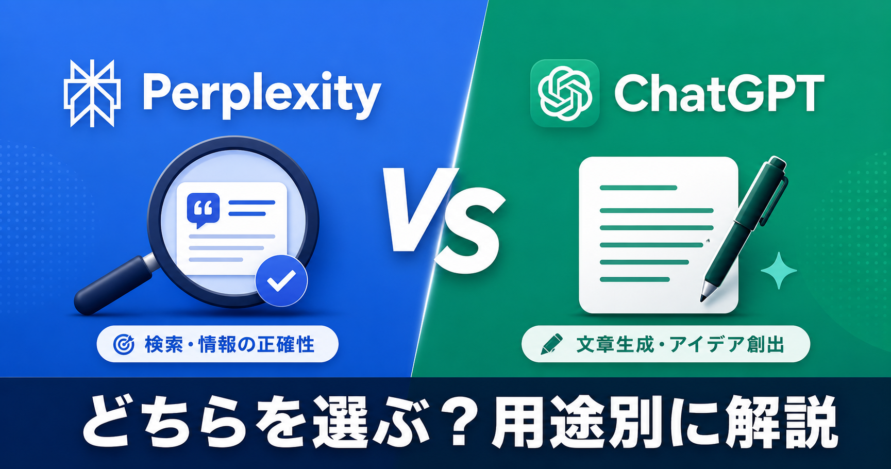

AIツール比較Perplexity vs ChatGPT｜どちらを選ぶべき？用途別に徹底解説
2026年5月 更新
「どっちのAIを使えばいい？」——この質問に最短で答えると、調べるならPerplexity、書くならChatGPTです。両方を日常的に使い込んでいる筆者が、実際の使い動かしをもとに適正な使い分けを解説します。
最大の違い：「調べるAI」vs「書くAI」
Perplexityはウェブをリアルタイム検索し、引用付きで回答する「AI検索エンジン」です。ChatGPTは学習済みの知識をベースに、文章・アイデア・コードを自在に生成する「AIライター」です。目的が違うので、どちらが上の話ではなく「用途によって選ぶ」のが正解です。
機能比較一覧
| 項目 | 🔵 Perplexity AI | 🟢 ChatGPT |
|---|---|---|
| 情報の新しさ | ✅ リアルタイム強 | ⚠️ 学習データ止まり |
| 出典・引用 | ✅ 常に表示強 | ❌ なし |
| 文章生成力 | ⚠️ 普通 | ✅ 圧倒的強 |
| アイデア出し | ⚠️ 少し苦手 | ✅ 得意強 |
| コード作成 | ⚠️ 限定的 | ✅ 得意強 |
| 画像生成 | ❌ Proのみ | ✅ Plusで利用可強 |
| 無料での使いやすさ | ✅ 制限小強 | ⚠️ 制限多め |
| 料金 | Pro $20/月 | Plus $20/月 |
用途別のおすすめ
| こんなとき | おすすめ |
|---|---|
| 最新ニュース・時事問題を調べたい | 🔵 Perplexity |
| 競合・市場リサーチをしたい | 🔵 Perplexity |
| 信頼性の高い情報収集をしたい | 🔵 Perplexity |
| ブログ・メール・提案書を書く | 🟢 ChatGPT |
| SNS投稿・アイデア出し | 🟢 ChatGPT |
| コード・プログラミング | 🟢 ChatGPT |
| 無料で気軽に使いたい | 🔵 Perplexity |
実際の使い分け例
「朝のニュースチェックや調査はPerplexity、LPのコピー作成やメール文はChatGPTと使い分けている。両方無料の幅使いで十分元が取れる。」
両方を幅使いするのが最も効果的です。Perplexityで情報を集め、ChatGPTで文章に越えるワークフローを機視してみましょう。副業・フリーランスには特におすすめの組み合わせです。
まとめ
🔵 Perplexity → 調べる・確認する作業 🟢 ChatGPT → 書く・作る・考える作業 ✅ 両方幅使いが最強